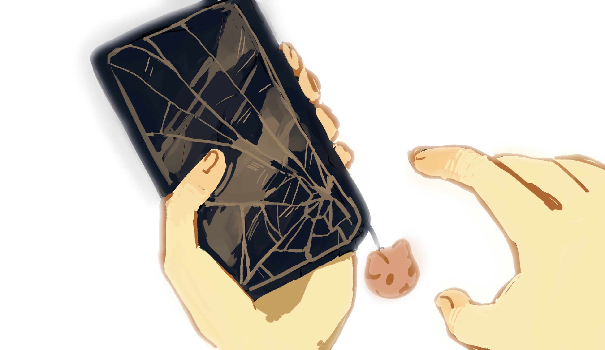

Новые сообщения
сегодня

Подробнее
Это последнее.
Девочка пока мне не отвечает. Жду новостей с фронта. Ужасная фраза в контексте, хотя, наверное, она и без контекста ужасная. Не знаю, что будет в будущем. Не знаю, что будет с властями. Не знаю вообще ничего, и мне все равно. Просто хочу, чтобы подобное никогда не повторялось. Хочу, чтобы можно было не боятся за своих друзей. Чтобы людей не гнали в автозаки за мирные выступления, да и вообще желательно чтобы людей не гнали в автозаки, что за пиздец.
Днем акция у посольства. Я даже взял какой-то плакат, лежит пустой, белый. Если честно, не знаю что писать, смешное не хочется, грустное не хочется. Просто маркером написать «Хватит» и так стоять. Интересно, меня тоже за это загребут? Почему я говорю с такой железной уверенностью, будто тебя вообще загребли.
В любом случае. Это должно было быть коротким сообщением. Что бы не случилось, я с тобой.
Думаю, это все, что осталось сказать.
P.s.: я передумал насчет «Хватит». Напишу «Прекратите насилие». Я бы сказал, что будет смешно, если с таким плакатом меня куда-нибудь потащат, но не будет. Показательно? Я не знаю. Что бы не случилось дальше, надеюсь, ты когда-нибудь зайдешь в сеть.
ты когда-нибудь зайдешь в сеть.